Universität Bern · Digital Humanities
Diese Anleitung zeigt Schritt für Schritt, wie du OpenHands – einen KI-Agenten, der Dateien lesen, Code schreiben und Befehle ausführen kann – auf deinem Computer startest. Das Sprachmodell dahinter ist Qwen 3.8, das auf den Servern der Universität Bern (GPUStack) läuft. Deine Texte gehen also nicht an einen kommerziellen Anbieter.
Es gibt drei Teile. Du musst nicht verstehen, wie sie intern funktionieren – aber es hilft zu wissen, welcher Teil wo läuft:
projekte ist das Einzige, was der Agent von deinem Computer sieht. Alles andere bleibt für ihn unsichtbar.qwen3.8-27bDu brauchst keine Programmierkenntnisse. An zwei Stellen tippst du einen Befehl in ein „Terminal“ – das wird jeweils genau erklärt.
GPUStack ist nur innerhalb des Uni-Netzes erreichbar. Wenn du nicht im Uni-WLAN sitzt, verbinde dich zuerst mit dem VPN der Universität.
Ohne VPN lässt sich OpenHands zwar öffnen, aber der Agent antwortet nicht – ihm fehlt dann das Sprachmodell.
Docker ist ein Programm, das andere Programme in abgeschotteten „Containern“ laufen lässt. So musst du OpenHands nicht selbst installieren, und es kann nichts ausserhalb seines Ordners verändern.
Für die nächsten Schritte brauchst du ein Terminal – ein Fenster, in das du Befehle tippst:
Prüfe, ob Docker läuft. Tippe diesen Befehl ein und drücke Enter:
docker versionWenn mehrere Zeilen mit „Client“ und „Server“ erscheinen, ist alles bereit. Erscheint eine Fehlermeldung, ist Docker Desktop noch nicht gestartet.
Ein API-Schlüssel ist wie ein Passwort für Programme: Damit weist sich OpenHands bei GPUStack aus.
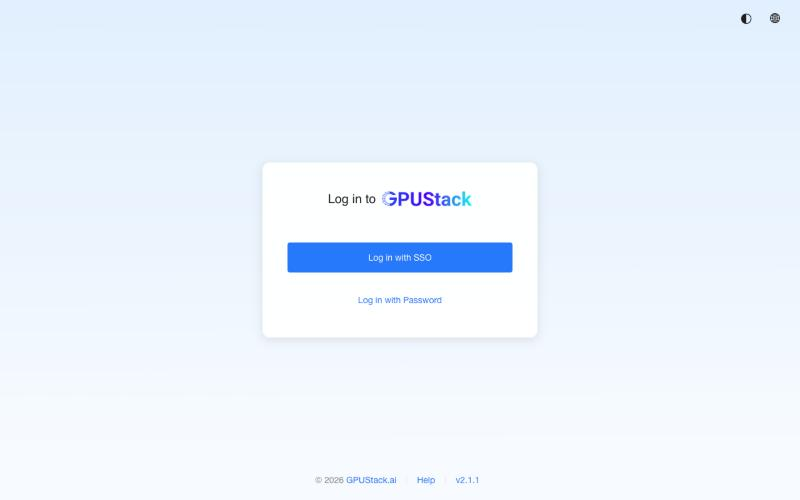
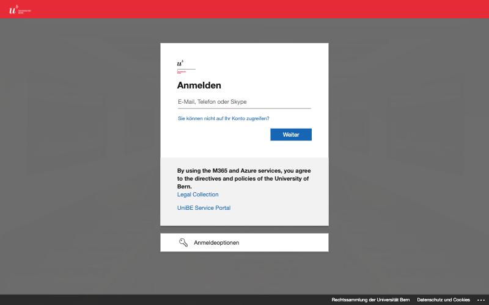
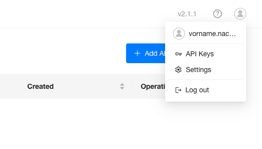
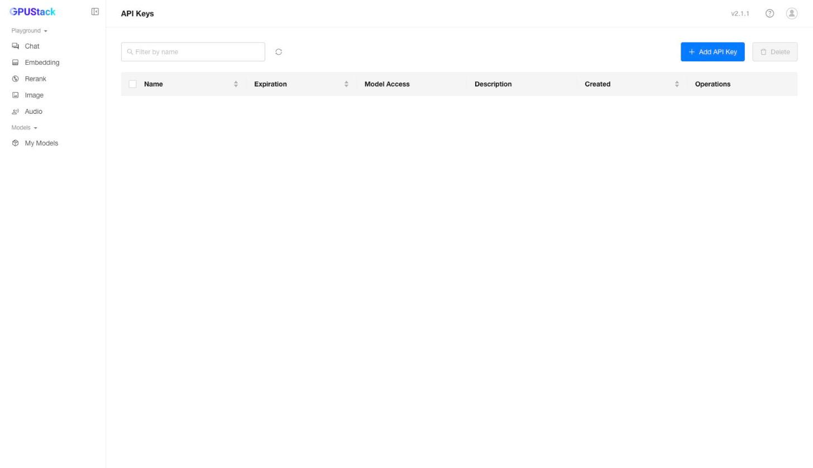
openhandsqwen3.8-27b setzen. So kann der Schlüssel nur dieses Modell benutzen.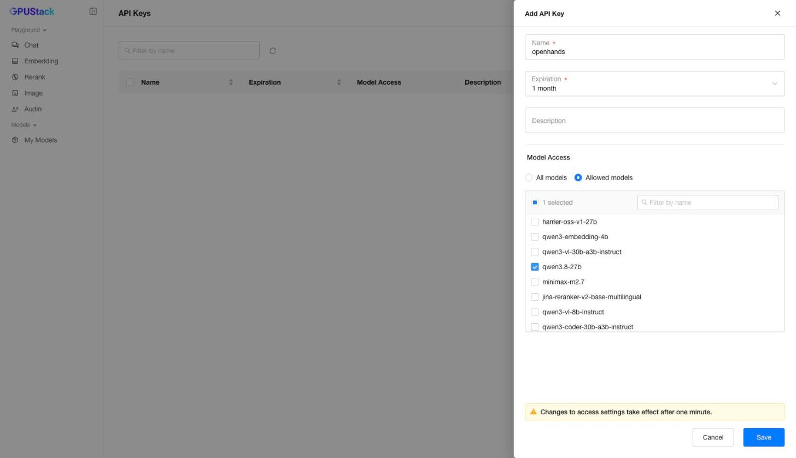
qwen3.8-27b.Der Schlüssel wird nur einmal angezeigt. Kopiere ihn sofort in deinen Passwortmanager oder eine Notiz, die nur du siehst. Schick ihn nie per Mail oder Chat und lade ihn nie auf GitHub hoch. Wenn er doch in falsche Hände gerät: in GPUStack löschen und einen neuen anlegen.
Lege einen Ordner unibe-agent an und darin einen Unterordner projekte. In projekte legst du später alles, woran der Agent arbeiten soll.
Mac (im Terminal):
mkdir -p ~/unibe-agent/projekte
cd ~/unibe-agent
curl -fsSLO https://thodel.github.io/unibe-agent/compose.yamlWindows (in PowerShell):
mkdir $HOME\unibe-agent\projekte
cd $HOME\unibe-agent
curl.exe -fsSLO https://thodel.github.io/unibe-agent/compose.yamlDer letzte Befehl lädt die Datei compose.yaml herunter. Sie sagt Docker, welches Programm es starten soll und welchen Ordner es sehen darf. Du musst sie nicht verändern.
Der Agent darf im Ordner projekte Dateien ändern und löschen. Lege dort für den Anfang Kopien ab, nicht deine einzigen Originale.
Bleib im selben Terminal-Fenster (im Ordner unibe-agent) und tippe:
docker compose up -dBeim ersten Mal lädt Docker das Programm herunter (rund 2 GB, je nach Verbindung einige Minuten). Danach öffne im Browser:
http://localhost:8031/canvas„localhost“ heisst: Die Seite kommt von deinem eigenen Computer, nicht aus dem Internet. Niemand sonst kann darauf zugreifen. Die Zahl 8031 ist der „Port“ – eine Art Hausnummer auf deinem Computer.
Tipp: Lege dir für diese Adresse ein Lesezeichen an.
Beim ersten Öffnen führt dich ein kurzer Assistent durch die Einrichtung.
Lass OpenHands ausgewählt und klicke auf Weiter.
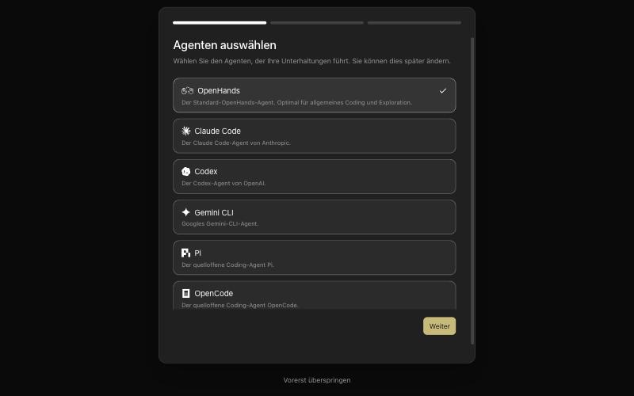
Wechsle oben auf den Reiter Erweitert und fülle die Felder so aus. Trag den API-Schlüssel gleich hier ein – sonst legt OpenHands ein Profil ohne Schlüssel an, und der Agent antwortet später nicht.
| Feld | Eintrag |
|---|---|
| Authentifizierung | API-Schlüssel |
| Benutzerdefiniertes Modell | openai/qwen3.8-27b |
| Basis-URL | https://gpustack.unibe.ch/v1 |
| API-Schlüssel | dein Schlüssel aus Schritt 5 |
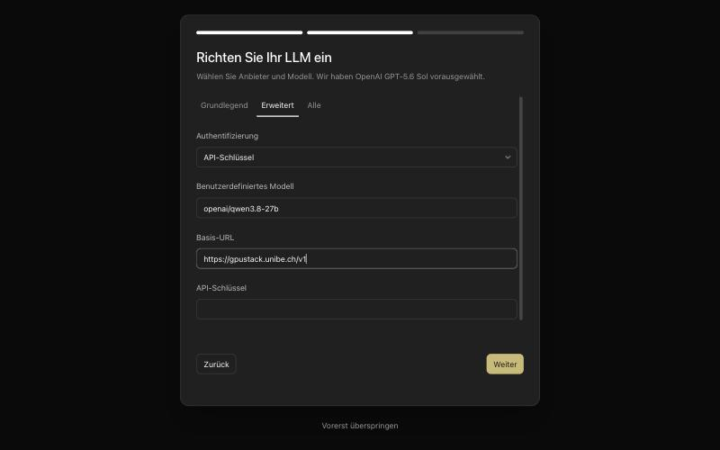
openai/ ist richtig – es bedeutet nur, dass GPUStack dieselbe Schnittstelle wie OpenAI spricht. Deine Daten gehen trotzdem nur an die Uni.Klicke auf Weiter. Im letzten Schritt („Sag Hallo“) kannst du auf Schliessen klicken – die erste Aufgabe stellen wir gleich mit dem richtigen Ordner.
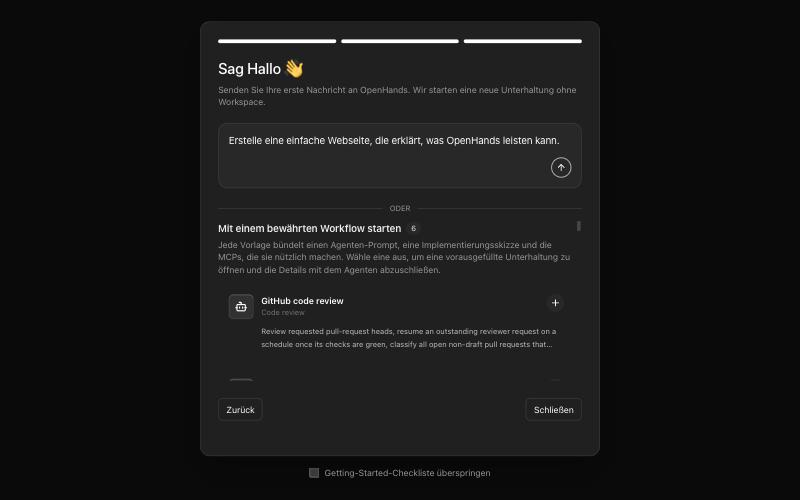
Dann fehlt der API-Schlüssel. Klicke auf Set up LLM und trage ihn nach. Hast du mehrere Profile angelegt, wähl unter dem Eingabefeld (beim Modellnamen) das Profil mit Schlüssel aus.
Damit der Agent mit deinen Dateien arbeiten kann, wählst du den Ordner projekte als „Workspace“:
projekte im Container) und dann auf Add this directory.
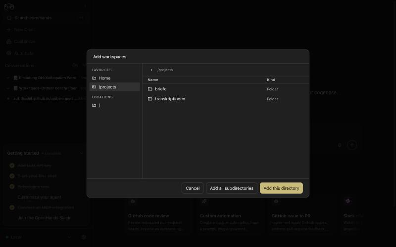
projekte (hier ein Beispiel). Mit „Add this directory“ wird der ganze Ordner freigegeben.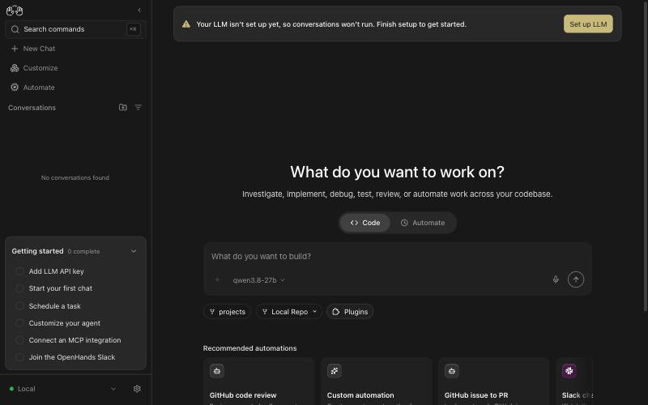
projects und Modell qwen3.8-27b sind gewählt.Tippe eine Aufgabe ins Eingabefeld und drücke Enter. Für den Anfang eignet sich etwas Harmloses:
Liste alle Dateien im Workspace auf und beschreibe in drei Sätzen, worum es darin geht.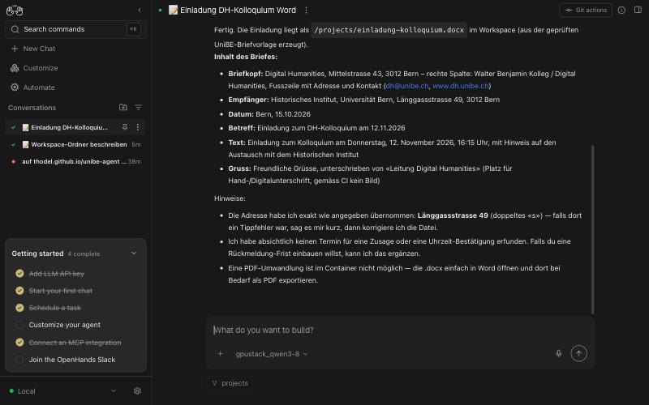
projekte liegt. Ein grüner Haken in der Liste links heisst „fertig“.Der Agent zeigt dir jeden Schritt: welche Befehle er ausführt, welche Dateien er liest und was er ändert. Lies mit, besonders am Anfang.
briefe/ in reinen Text um.“transkription.txt, wie oft jeder Ortsname vorkommt, und speichere das Ergebnis als CSV.“scans/ nach dem Muster Jahr_Nummer umbenennt – führ es aber erst aus, wenn ich zustimme.“Qwen 3.8 ist ein „denkendes“ Modell: Vor der eigentlichen Antwort überlegt es oft eine Weile. Das ist normal. Es arbeitet langsamer als kommerzielle Dienste und macht Fehler – prüfe die Ergebnisse, bevor du dich darauf verlässt.
Für diese Anleitung haben wir den Agenten gebeten, einen kurzen Einladungsbrief zu einem Kolloquium als Word-Datei zu schreiben – mit Absender, Empfänger und Datum. Nach rund einer Minute lag die Datei im Ordner projekte:
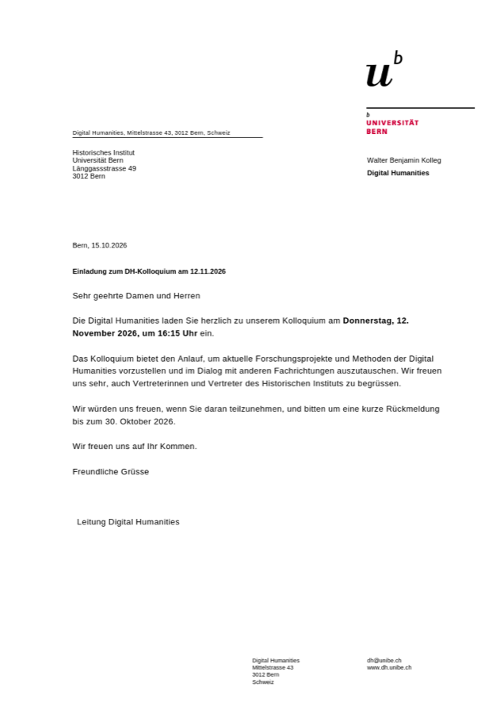
Alle Befehle tippst du im Terminal im Ordner unibe-agent (vorher cd ~/unibe-agent, unter Windows cd $HOME\unibe-agent).
| Was | Befehl |
|---|---|
| Agent stoppen | docker compose down |
| Agent wieder starten | docker compose up -d |
| Läuft er? | docker compose ps |
| Was ist passiert? (Protokoll) | docker compose logs --tail 50 |
Solange Docker Desktop läuft, startet der Agent nach einem Neustart des Computers von selbst. Deine Einstellungen und Gespräche liegen im Ordner openhands-daten und bleiben beim Stoppen erhalten.
Aktualisieren: Lade die neueste compose.yaml erneut herunter (Befehl aus Schritt 6) und starte dann mit docker compose up -d. Docker holt die neue Version selbst.
Ganz entfernen: docker compose down, dann den Ordner unibe-agent löschen. Den API-Schlüssel in GPUStack ebenfalls löschen.
| Was du siehst | Was es bedeutet und was hilft |
|---|---|
| „Api key not allowed to access model qwen3.8-27b“ | Der Schlüssel darf dieses Modell nicht verwenden. In GPUStack einen Schlüssel anlegen, bei dem qwen3.8-27b erlaubt ist (Schritt 5). |
| „Connection error“, „timed out“ oder der Agent antwortet nicht | VPN prüfen. GPUStack ist nur im Uni-Netz erreichbar. |
Die Seite localhost:8031 lädt nicht | Läuft Docker Desktop? Dann docker compose up -d im Ordner unibe-agent. |
| „port is already allocated“ | Ein anderes Programm belegt Port 8031. In compose.yaml die Zeile "127.0.0.1:8031:8000" zu "127.0.0.1:8032:8000" ändern, docker compose up -d ausführen und localhost:8032/canvas öffnen. |
| Der Agent sieht meine Dateien nicht | Liegen sie im Ordner unibe-agent/projekte? Ist der Workspace projects gewählt (Schritt 9)? |
| „Your LLM API key appears to be invalid“ oder gelbe Leiste „Your LLM isn't set up yet“ | Das gewählte Profil hat keinen oder einen falschen Schlüssel. Unter dem Eingabefeld das richtige Profil wählen oder über Set up LLM den Schlüssel nachtragen. |
In projekte taucht ein versteckter Ordner .git auf | Das legt OpenHands selbst an, um Änderungen nachverfolgen zu können. Einfach liegen lassen. Darum auch nie den ganzen Benutzerordner freigeben, sondern nur projekte. |
| Die Antwort bricht mitten im Satz ab | Das Modell hat sein Längenlimit erreicht. Die Aufgabe in kleinere Teile zerlegen. |